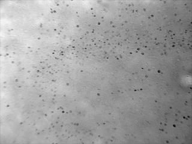
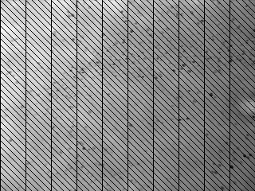

Use MATLAB to play with the Fourier Transform.
Also here are some images of cells for you to experiment with:

the basic image
which contains illumination variations
added vertical stripes

added diagonal stripes
Here are a couple of m-files that you'll need in the directory that you run MATLAB from: show.m and edit.m.
Now start up MATLAB and read in an image, e.g. i = imread('cells1.tif');
You can display an image using imshow(i);
The following command will "edit" the power spectrum
j = edit(i,10 ) ;
Use it to try to remove the image artifacts.
Now revisit the first task in the Image Acquisition and Early Processing Image Acquisition and Early Processing lab from week 2. Subsample this 512x512 image of circles and also this 1024x1024 image of lines by a factor of eight. To avoid aliasing blur the image using a simple low pass filter (e.g. to start you can even use a basic box car filter). Use the Nyquist Criterion to determine an appropriate amount of filtering which you should apply using the Fourier Transform.